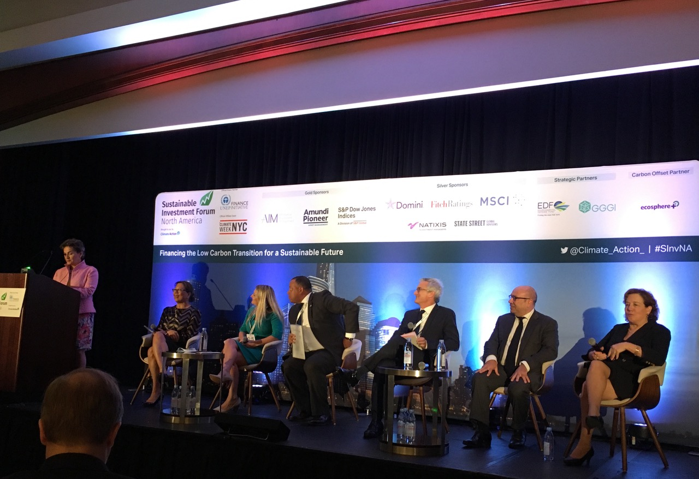
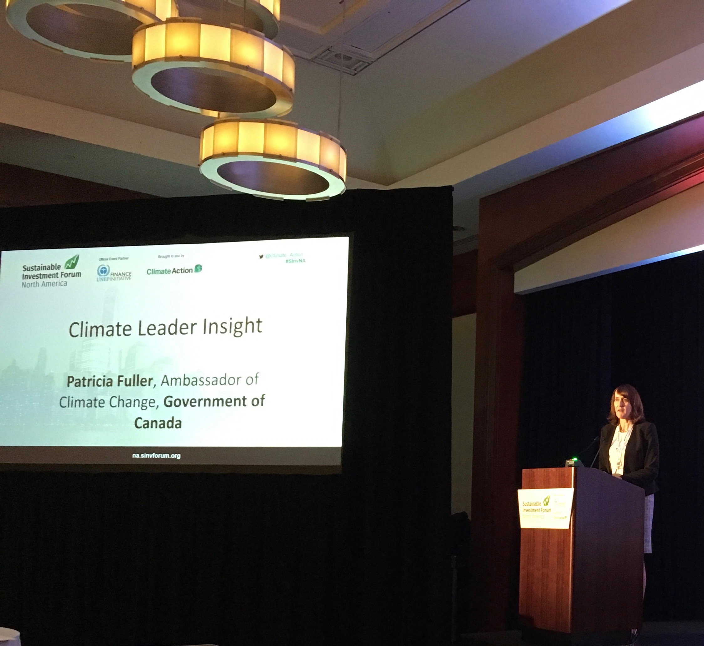

By Dan Whateley
September 26, 2018
 U.S. cities and states are leading the charge on green investing according to officials at today’s Sustainable Investment Forum North America conference in New York. The event brings together 350 bankers, investors, pension fund managers and policymakers.
“In the U.S., we have $3 trillion in state and local treasury assets,” said Kurt Summers, Treasurer for the city of Chicago. “That's $3 trillion dollars that, my goal is to lead toward sustainable investment strategies." Summers views Chicago as a leader in sustainable investing. The city has committed to a 100 percent carbon neutral investment portfolio by 2020. Summers’ goal is to convince other city financial officers and treasury controllers to follow suit, though he admits it requires some educating. “This is not a natural thing for a number of folks to do. Maybe for San Francisco, but not necessarily for Houston for example."
"We're here to transform the global economy and nothing less than that."
California State Controller Betty T. Yee agrees that states and cities need to lead the charge on sustainable investing. "We in California pride ourselves, and I think are recognized, as being the innovation capital of the world,” she said. “If we do not start to really get to the goals of the Paris agreement, all of us in the government world, in the public sector, are going to be facing severe decisions in terms of how we allocate resources that we do have."
"We're here to transform the global economy and nothing less than that,” said panel keynote speaker Christiana Figueres. Figueres helped develop the 2015 Paris Agreement while serving as Executive Secretary to the UN Framework Convention on Climate Change. The U.S. withdrew from the agreement in June 2017. “It’s all very good news,” she said, “that we have more and more investors that are really pulling out of high-risk assets such as coal.”
Fantastic line up of speakers on our opening panel, including Frederic Samama and Lauren Smart from our Gold Sponsors @AmundiPioneer and @SPDJIndices #SInvNA pic.twitter.com/oqq1fFYx24
— Jon Hales (@climatejon) September 26, 2018
Jake Werskman, the Chief International Climate Change Negotiator for the European Commission, has the Paris agreement on his mind. “For us,” he said, “in terms of the commitment that we made under the Paris agreement, this is an economy wide agreement to reduce our emissions." Werksman is looking for long-term solutions. “How do you move your policies to ensure you’re at zero emissions within an imaginable period of time for policy makers and investors.” “What kind of life,” he continued, “will we be leading under that scenario that still brings benefits and a high quality of life to Europeans.”
The Sustainable Investment Forum North America occurs as part of Climate Week NYC, an annual event timed with the meeting of the United Nations General Assembly.